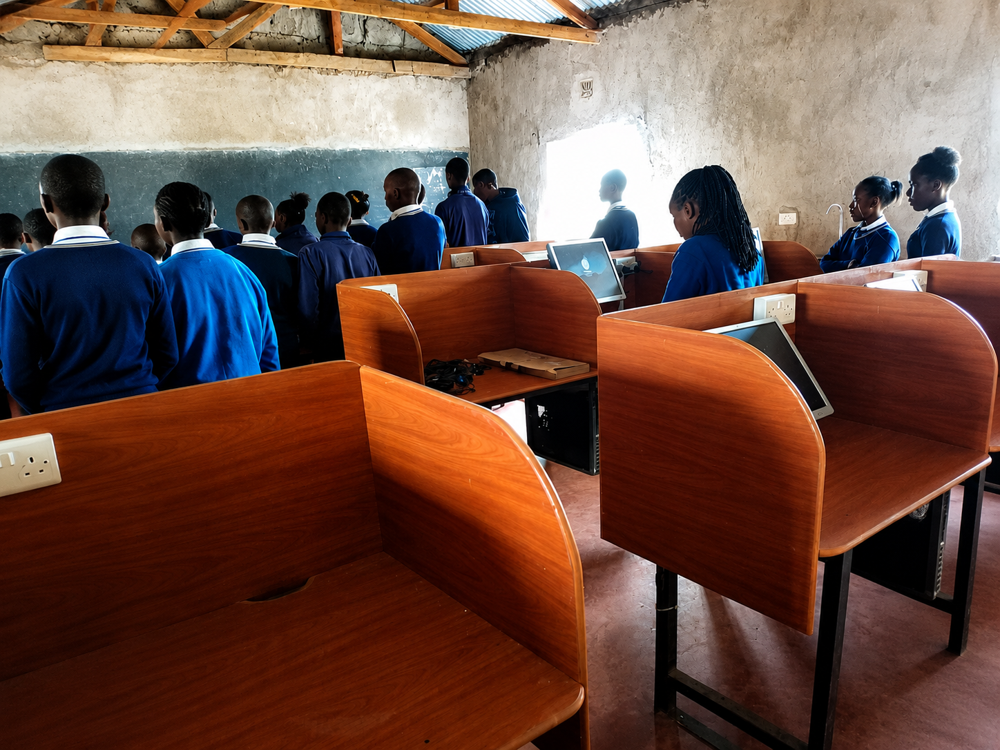

Project Overview
Supported digital literacy and educational technology initiatives under the African Ruggedized Education System (ARES) implementation at Ol Pejeta Conservancy.
The project focused on digital skills training, educational device deployment, classroom technology support, and improving digital learning accessibility within underserved learning environments.
Key Responsibilities
- Conducted digital literacy training for educators and learners.
- Configured and deployed educational devices.
- Supported classroom technology integration.
- Provided technical support and troubleshooting.
- Assisted with offline learning platform accessibility.
- Promoted responsible and safe technology use.
Key Focus: Empowering learners and educators through accessible digital education and technology support.
Tools & Technologies Used
ARES Educational Systems
Laptops & Educational Tablets
Kolibri Learning Platform
Windows & Linux Systems
Interactive Learning Platforms
Google Workspace Tools
Impact & Outcomes
- Improved digital literacy among educators and learners.
- Enhanced access to educational technology resources.
- Strengthened digital classroom integration.
- Supported inclusive and technology-driven learning environments.
Project Evidence

